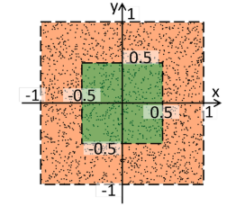
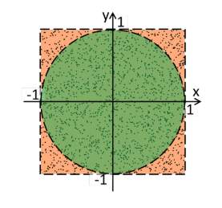

02-numpy科学计算
numpy统计分析¶
1 2 3 4 | |
- 求和
np.sum(a)
- 按行求和
np.sum(a,axis=0)
- 按列求和
np.sum(a,axis=1)
- 求最大值
np.max(a)
- 求最小值
np.min(a)
- 求平均值
np.mean(a) #所有数值加起来的平均值
- 求中位数
np.median(a) #去掉最大值和最小值剩下数的平均值
- 求方差，方差反应稳定程度
方差越大，数据的波动越大；方差越小，数据的波动就越小
方差是指一组数据中的各个数减这组数据的平均数的平方和的平均数，如（1，2，3,4,5）这组数据的方差，就先求出这组数据的平均数（1+2+3+4+5）÷5＝3，然后再求各个数与平均数的差的平方和，用（1-3）²+（2-3）²+（3-3）²+（4-3）²+（5-3）²＝10，再求平均数10÷5＝2，即这组数据的方差为2
np.var(a)
- 求标准差，均方差
标准差是方差的开平方
np.std(a)
偏差和方差¶
偏差：枪的镜头准不准会产生偏差，偏差是固定的
方差：抢手的手抖不抖会产生方差，方差是波动的
偏差可以很容易加偏移量 bias修正。
方差反映了选手的能力，需要经过艰苦卓绝的训练才能降低方差。
numpy线性代数入门¶
数学的来源
我五岁的侄女喜欢在生日卡上写：「给你很多、很多、很多……的爱」，几乎塞满半页的「很多」。
也许几千年前还没发明数字的时候，就是用这种方法代替计数。穴居人不会说「3颗石头」，而是说「石头、石头、石头。」

穴居人出外打猎一整天，回到洞穴后对老婆说："我带回来兔子、兔子、兔子。"
宇宙大爆炸和核聚变理论的提出者，著名的物理学家伽莫夫写过一本书《从1到无穷大》,里面讲了一个故事，原始部落里，两个部落酋长比赛数数，当其中一个酋长说到3，另外一个酋长沉默了一会儿就说你赢了。
酋长见过最多的最大的数字就是3，他们没有4的概念。
提升自己的认知边界，你所了解的世界才更广阔。王健林说先定一个小目标，赚他1个亿。对于我们普通人，那是天文数字，对于王健林可能真的只是个小目标。
玛雅计算法¶
玛雅文明，公元前1500年。天文学、数学、农业、艺术及文字等方面都有极高成就。
-
思考1： 玛雅人如何表示20
-
思考2： 玛雅人如何计算 48 + 69
初等数学和高等数学¶
高等数学只是把数学换了一种表达方式
线性代数3大核心概念
- 向量
- 矩阵
- 维度
向量： 一串数字
标量： 一个数字
维度：数字如何组合
numpy矩阵的乘法¶
-
小明今天要做饭，消耗两斤肉，肉每斤20元，一共要花费多少？ $$ 20\times 2=40 $$
-
小明今天要做饭，消耗2斤肉，1斤蔬菜。肉每斤20元，蔬菜每斤5元，则一共需多少花费？
- 小明今天要做饭，消耗2斤肉，1斤蔬菜。在“钱大妈“ 肉每斤20元，蔬菜每斤5元，
在沃尔玛肉每斤25元，蔬菜每斤10元，则一共需多少花费？
1 2 3 | |
-
代数由数字和位置表述
-
数字的位置有特殊的意义
-
在左边的这个矩阵的每一行，都代表了一种价目表；在右边的矩阵的每一列，都代表了一种做饭方式。那么所有可能的组合所最终产生的花费，则在结果矩阵中表示出来了。
-
矩阵运算就是定义了一组数据排放的格式， 不同位置的数据代表不同的含义。
numpy求解鸡兔同笼问题¶
鸡兔同笼是中国古代的数学名题之一。
大约在1500年前，《孙子算经》中就记载了这个有趣的问题。书中是这样叙述的： 今有鸡兔同笼，上有三十五头，下有九十四足，问鸡兔各几何？
翻译： 有若干只鸡兔同在一个笼子里，从上面数，有35个头，从下面数，有94只脚。问笼中各有多少只鸡和兔？
1 2 3 4 5 6 | |
numpy倒数和逆矩阵¶
倒数（reciprocal / multiplicative inverse）是一个数学学科术语，拼音是dào shù。是指数学上设一个数x与其相乘的积为1的数，记为1/x，过程为“乘法逆”，除了0以外的数都存在倒数， 分子和分母相倒并且两个乘积是1的数互为倒数，0没有倒数。 $$ 3\times X=27 $$ 3的倒数是1/3 等式两边同时乘以 1/3 $$ \dfrac {1}{3}\times 3\times X=\dfrac {1}{3}\times 27 $$ 化简后： $$ X=9 $$
逆矩阵跟倒数是一样的。
设A*是数域上的一个n阶矩阵，若在相同数域上存在另一个n阶矩阵B，使得： AB=*BA=E* ，则我们称B是*A的逆矩阵，而A则被称为可逆矩阵。注：E为单位矩阵。 $$ AX=B $$ 假设 A的逆矩阵乘以A矩阵等于E，单位矩阵。 $$ A^{-1}A=E $$
1 2 | |
概率论入门¶
正态分布的平均值和方差
标准正态分布又称为u分布，是以0为均数、以1为标准差的正态分布，记为N（0，1）。
测量的误差 都是在标准数值上下浮动。拉普拉斯和高斯同时发现了这样的统计学的误差公式。


拉普拉斯是法国人，于是，法国人民称之为“拉普拉斯分布”；高斯是德国人，当时德国就喜欢叫它“高斯分布”；其他国家的人们呢，嗯，不知道站哪边，便直接叫它“拉普拉斯-高斯分布”。
μ是期望值（平均数）， σ是标准差（均方差）
1 2 3 4 5 6 7 8 9 10 | |
numpy数据打散¶
1 2 3 | |
numpy随机数种子¶
1 2 | |
一旦定下来种子，每次随机的结果都一样
numpy逻辑操作¶
1 | |
判断是不是全都是True
1 | |
判断是不是有一个是True
1 | |
转换普通numpy数组到真值数组
1 2 3 | |
numpy 排序操作¶
1 | |
直接排序
1 | |
排序索引
1 | |
按行排序, 从小到大
1 2 | |
按列排序, 从小到大
1 2 | |
按行排序索引, 从小到大
1 2 | |
按列排序索引, 从小到大
1 2 | |
行向量和列向量¶
- numpy中一维数组 行向量和列向量没有任何区别
a = np.array([1,2,3])
a.T
a.transpose()
- 二维数组 行向量列向量变化
b = np.array([[1],[2],[3]])
b.T
b.transpose()
- 一维数组变二维
np.array([1,2,3]).reshape(3,1)
- 其他创建行向量或者列向量方式
a = np.r_[-2, -1, 3,2,3,4,1:4]
np.c_[np.array([1,2,3,4,5])]
案例：计算PI¶
- 绿色正方形的面积 占据整个橙色正方形面积的1/4.
- 如果我们在橙色正方形里面随机生成10万个点 , 有两万5千个点 应该落入到绿色正方形内

- 同理，我们去计算pi的值

如果我们在0~1的第一象限随机撒下10万个点， 落入绿色1/4圆的点的数量应该是 10万 * 1 / 4 * PI
$$
Pi =4\ast p_{i}\div p_{t}
$$
1 2 3 4 5 6 7 8 9 | |